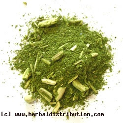
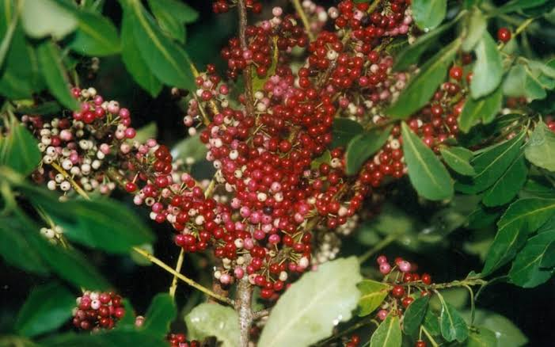

sejam bem vindos ao meu site
O ramo de erva-mate está presente na bandeira e nos brasões oficiais do estado do Paraná, representando a força de sua economia histórica e a importância dessa planta para o desenvolvimento regional. Durante muitos anos, a produção e a comercialização da erva-mate foram fundamentais para a economia paranaense, contribuindo para a geração de empregos, o crescimento das cidades e o fortalecimento do comércio. Além disso, a erva-mate faz parte da cultura e da identidade do Paraná, sendo um símbolo da riqueza natural do estado e da relação entre sua população e o meio ambiente. Sua presença nos símbolos oficiais valoriza esse importante patrimônio histórico, econômico e cultural paranaense..

A Importância da Erva-Mate na História e na Cultura do Paraná
A erva-mate no Paraná foi um dos principais motores históricos da emancipação política estadual, tornando-se também o principal produto econômico do século XIX. Sua produção e comercialização impulsionaram o crescimento da economia, fortaleceram o comércio e contribuíram para o desenvolvimento de diversas cidades paranaenses. Além de sua importância econômica, a erva-mate tornou-se um símbolo vivo da identidade cultural do Paraná, presente nos costumes, na história e nos símbolos oficiais do estado. Atualmente, também representa a valorização da natureza e a necessidade de preservação ambiental, mostrando como a erva-mate está ligada à história, à cultura, à economia e às riquezas naturais do povo paranaense.

história da erva-mate no Paraná é marcada por povos indígenas, impulsos na economia e símbolos culturais.
A história da erva-mate no Paraná se desenvolveu a partir do Ciclo da Erva-Mate, impulsionando a economia e a emancipação política do estado.

curiosidades 1
Uma curiosidade sobre o tema é que o Paraná chegou a ter a erva-mate como um dos principais produtos de sua economia no século XIX. A atividade foi tão importante que contribuiu para o crescimento de cidades, a construção de estradas e ferrovias e o desenvolvimento do comércio paranaense. Por isso, a erva-mate acabou sendo incorporada aos símbolos oficiais do estado, representando sua história e sua identidade econômica e cultural.
curiosidades 2
o Paraná foi, durante muito tempo, um dos maiores produtores de erva-mate do Brasil. A atividade ajudou a movimentar a economia do estado e contribuiu para o desenvolvimento de várias cidades. Por sua importância histórica, a erva-mate tornou-se um dos principais símbolos da cultura e da identidade paranaense.